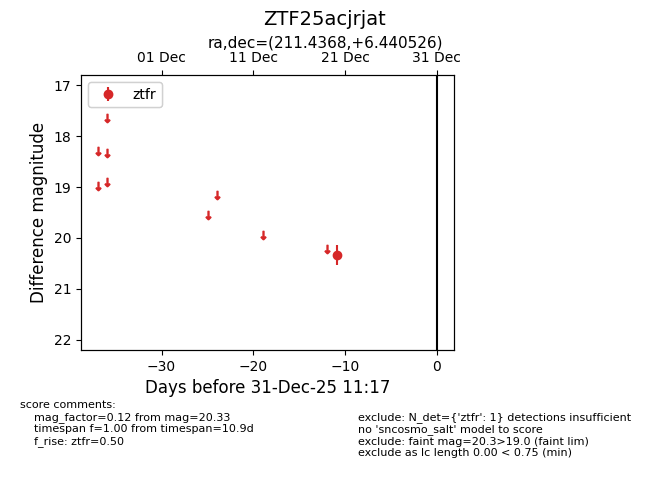
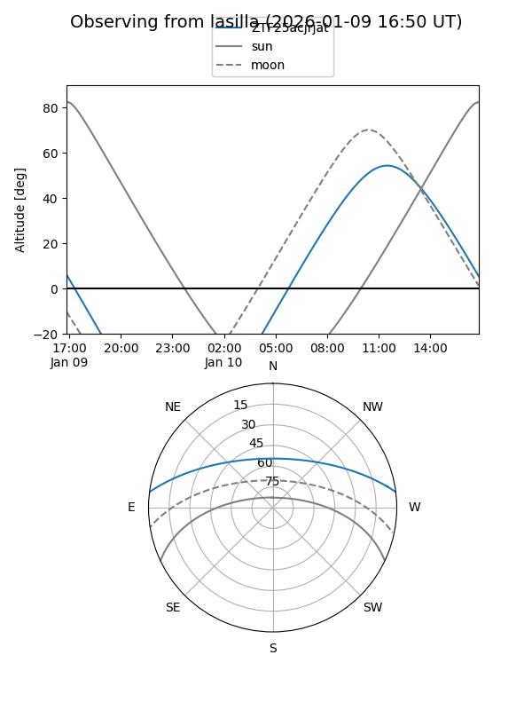
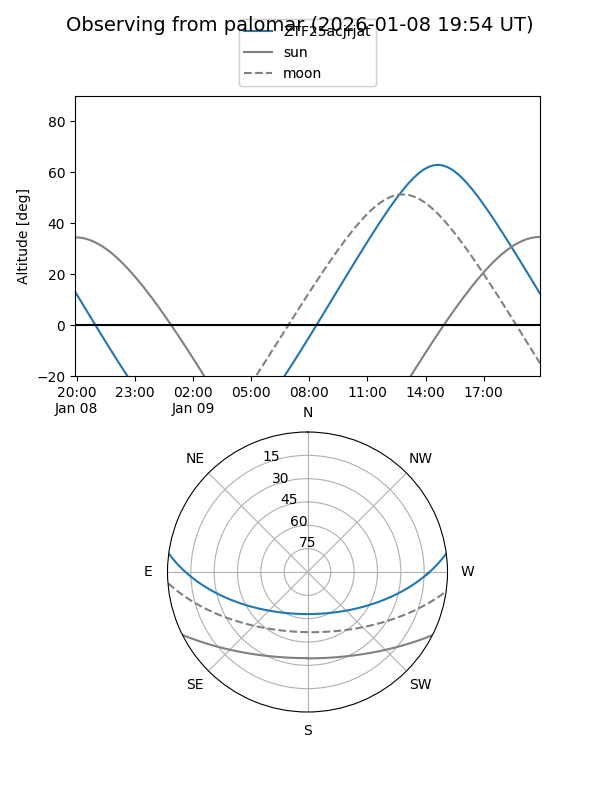

ZTF25acjrjat
Target ZTF25acjrjat at 2025-12-22 16:41
Aliases and brokers:
FINK: fink-portal.org/ZTF25acjrjat
Lasair: lasair-ztf.lsst.ac.uk/objects/ZTF25acjrjat
ALeRCE: alerce.online/object/ZTF25acjrjat
alt names
ZTF25acjrjat (ztf,fink_ztf)
Coordinates:
equatorial (ra, dec) = 211.4368,+6.44053
equatorial (HMS+DMS) = 14:05:44.82,+06:26:25.90
galactic (l, b) = (346.7713,+62.80288)
Flags:
Photometry:
last ztfr=20.33
1 ztfr detections
Lightcurve

Visibility


Additional plots